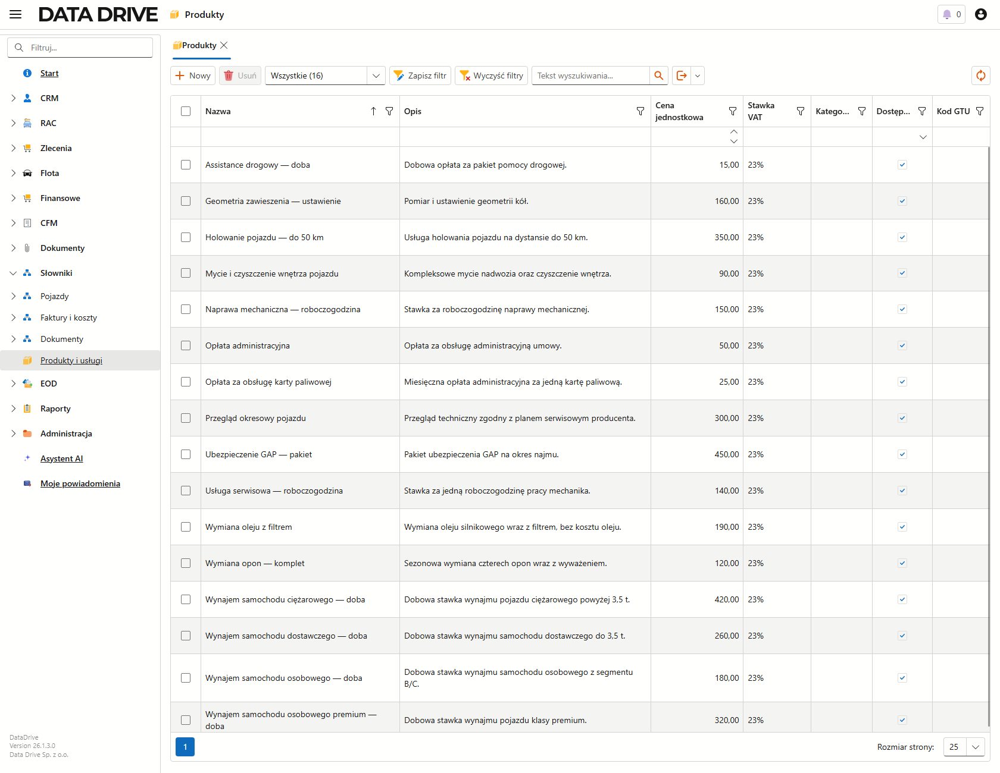
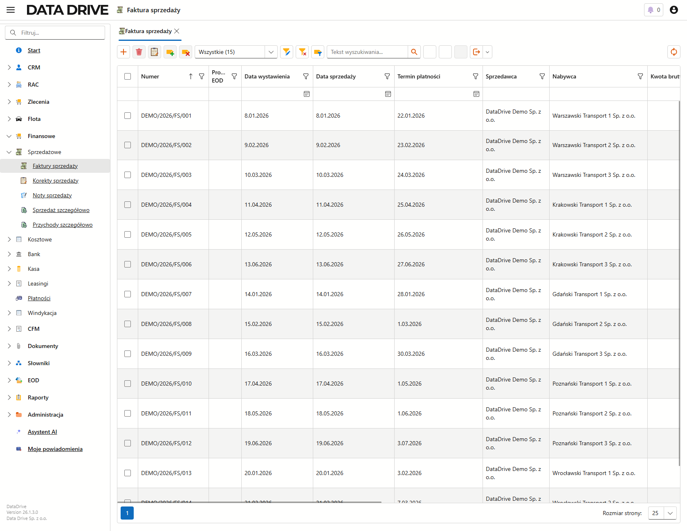
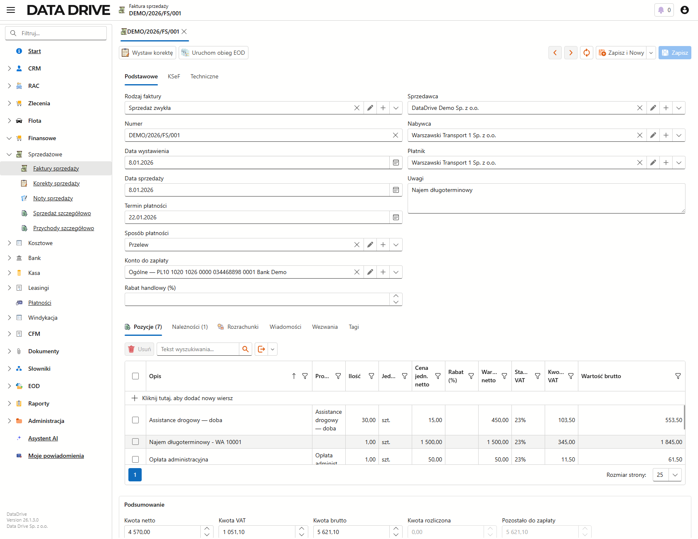
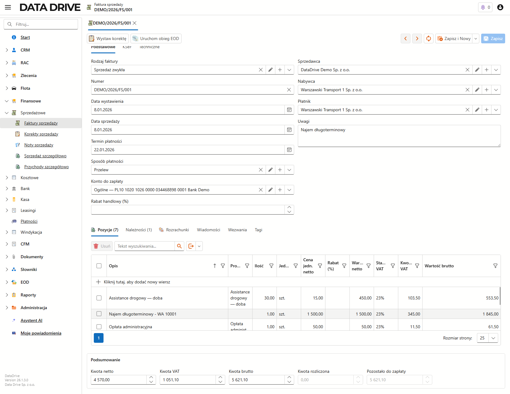
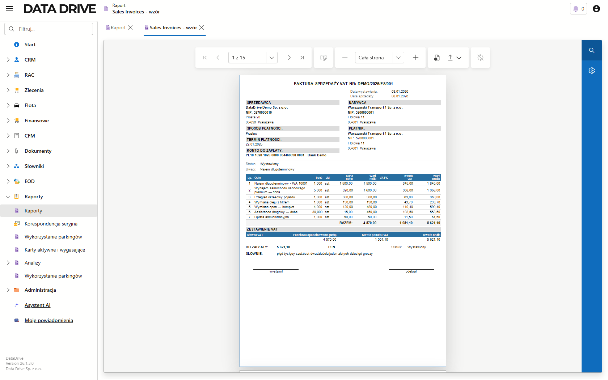

Faktury sprzedaży
Moduł sprzedaży pozwala wystawić fakturę dla klienta i policzyć ją za Ciebie: numer nadaje się sam, pozycje pobierasz z katalogu produktów, a kwoty netto, VAT i brutto liczą się automatycznie. Fakturę tworzysz jako szkic, sprawdzasz, a potem wystawiasz jednym ustawieniem statusu.
O module sprzedaży
Faktury znajdziesz w lewym menu, w grupie Finansowe → Sprzedażowe → Faktury sprzedaży. Każda faktura składa się z dwóch części: nagłówka z danymi stron i płatności oraz listy pozycji z tym, co sprzedajesz. Powtarzalne usługi i towary trzymasz w katalogu Produkty i usługi w grupie Słowniki, dzięki czemu nie przepisujesz za każdym razem ceny ani stawki VAT.
Produkty i usługi
Katalog produktów to Twój cennik. Raz opisany produkt podstawia na pozycję faktury nazwę, cenę i stawkę VAT, więc wystawianie idzie szybciej i bez pomyłek w kwotach.
Katalog demonstracyjny zawiera kilkanaście pozycji typowych dla firmy flotowej i wynajmu, pogrupowanych według tego, co realnie fakturujesz:
- Wynajem pojazdów — dobowe stawki dla samochodu osobowego, osobowego premium, dostawczego i ciężarowego,
- Usługi serwisowe — przegląd okresowy, naprawa mechaniczna, wymiana oleju, wymiana opon, geometria zawieszenia i mycie pojazdu,
- Opłaty i dodatki — obsługa karty paliwowej, opłata administracyjna, ubezpieczenie GAP, assistance drogowy i holowanie.
Wszystkie pozycje mają stawkę 23%, a ceny netto wpisujesz raz — na fakturze wystarczy wskazać produkt i podać ilość.

Aby dodać produkt do katalogu, wykonaj następujące kroki:
- Przejdź do Słowniki → Produkty i usługi i kliknij Nowy.
- Wpisz Nazwę oraz Cenę jednostkową netto.
- Wybierz Stawkę VAT i — jeśli prowadzisz sprzedaż objętą kodami GTU — uzupełnij Kod GTU.
- Zapisz produkt.
Produkt pojawi się na liście i od razu można go wskazać na pozycji faktury.
- Nazwa
- Nazwa produktu lub usługi, która trafi na pozycję faktury.
- Cena jednostkowa
- Domyślna cena netto za jednostkę. Podstawia się na pozycję, ale na samej fakturze możesz ją nadpisać.
- Stawka VAT
- Domyślna stawka podatku, na przykład 23%. Razem z ceną decyduje o kwocie VAT pozycji.
- Kod GTU
- Oznaczenie grupy towarowo-usługowej wymagane w niektórych rodzajach sprzedaży. Zostaw puste, jeśli produktu nie dotyczy.
- Dostępny
- Odznacz, gdy wycofujesz produkt ze sprzedaży. Niedostępne pozycje aplikacja pokazuje przekreślone.
Lista faktur
Ekran zbiera wszystkie faktury sprzedaży z ich numerami, datami, stronami i kwotami. Stąd otwierasz istniejący dokument albo zakładasz nowy.

- Numer
- Numer faktury nadany według serii numeracji. Aplikacja tworzy go sama przy pierwszym zapisie.
- Data wystawienia, Data sprzedaży, Termin płatności
- Trzy daty dokumentu. Domyślnie wystawienie i sprzedaż to dzisiaj, a termin płatności wypada dwa tygodnie później.
- Sprzedawca i Nabywca
- Strony transakcji — Twoja firma jako sprzedawca oraz klient jako nabywca.
- Kwota brutto
- Wartość faktury z podatkiem. Liczy się z pozycji, nie wpisujesz jej ręcznie.
Wystawienie faktury — nagłówek
Fakturę zaczynasz od nagłówka: wskazujesz strony, ustalasz daty i sposób zapłaty. Większość pól aplikacja podpowiada, więc zwykle wystarczy wskazać nabywcę i sprawdzić daty.

Aby założyć fakturę, wykonaj następujące kroki:
- Na liście faktur kliknij Nowy.
- W polu Rodzaj faktury zostaw Sprzedaż zwykła albo wybierz właściwy rodzaj — od niego zależy seria numeracji.
- Wskaż Nabywcę, czyli klienta z kartoteki. Płatnik ustawi się na tego samego kontrahenta; zmień go tylko wtedy, gdy płaci ktoś inny.
- Sprawdź daty i w razie potrzeby popraw Termin płatności.
- Ustaw Sposób płatności i — przy przelewie — Konto do zapłaty.
- Zapisz. Numer nada się automatycznie.
Faktura zapisze się jako Szkic i dostanie numer z bieżącej serii, na przykład FV/2026/07/000001. Teraz możesz dodać pozycje.
Pozycje faktury
Pozycje to lista tego, co sprzedajesz. Jedna faktura mieści dowolnie wiele wierszy, więc na jednym dokumencie rozliczysz cały miesiąc obsługi pojazdu — najem, przegląd, wymianę oleju, opony, assistance i opłatę administracyjną naraz. Wybór produktu z katalogu wypełnia większość pól wiersza, a kwoty netto, VAT i brutto oraz podsumowanie faktury liczą się na bieżąco.

Licznik przy zakładce Pozycje pokazuje, ile wierszy ma faktura — na przykładzie widnieje Pozycje (7). Kwoty w sekcji Podsumowanie to suma wszystkich wierszy, więc każdy dodany produkt od razu podnosi wartość dokumentu.
Aby dodać pozycję, wykonaj następujące kroki:
- Przejdź na zakładkę Pozycje i kliknij Kliknij tutaj, aby dodać nowy wiersz.
- W polu Produkt wybierz pozycję z katalogu — nazwa, cena netto i stawka VAT podstawią się same.
- Podaj Ilość i w razie potrzeby popraw Cenę jedn. netto lub Rabat (%).
- Zapisz wiersz.
Wartość netto, kwota VAT i wartość brutto wyliczą się dla pozycji, a sekcja Podsumowanie zaktualizuje kwoty całej faktury: netto, VAT, brutto oraz pozostało do zapłaty.
- Produkt
- Pozycja z katalogu. Jej wybór podstawia opis, cenę i stawkę VAT, więc reszty pól zwykle nie ruszasz.
- Opis
- Treść pozycji drukowana na fakturze. Podpowiada się z produktu, ale możesz ją doprecyzować.
- Ilość i Cena jedn. netto
- Liczba jednostek oraz cena za jednostkę. Ich iloczyn daje wartość netto pozycji.
- Stawka VAT
- Stawka podatku pozycji. Wraz z wartością netto wyznacza kwotę VAT.
- Rabat (%)
- Upust liczony od wartości pozycji. Zostaw pusty, jeśli nie udzielasz rabatu.
Wystawienie faktury
Gotową fakturę wystawiasz, zmieniając jej status. To domyka dokument i nadaje mu moc obowiązującego.
Aby wystawić fakturę, wykonaj następujące kroki:
- Otwórz szkic faktury i sprawdź strony, daty oraz pozycje.
- W polu Status wybierz Wystawiony.
- Zapisz.
Faktura przejdzie w stan Wystawiony i od tej chwili będzie gotowa do rozliczenia oraz do ewentualnej korekty.
Drukowanie faktury
Gotową fakturę wydrukujesz i zapiszesz jako PDF przez raport Faktura sprzedaży. Wydruk zbiera w jednym miejscu dane obu stron, wszystkie pozycje, zestawienie VAT i kwotę do zapłaty słownie — dostajesz dokument gotowy do wysłania klientowi.
Aby wydrukować fakturę, wykonaj następujące kroki:
- W lewym menu przejdź do Raporty → Raporty.
- Na liście zaznacz raport Sales Invoices — wzór (Faktura sprzedaży).
- Na górnym pasku kliknij Wykonaj raport.
- W podglądzie przejrzyj kolejne strony — każda faktura zajmuje osobną stronę.
- Kliknij Eksport do i wybierz PDF, aby pobrać plik.
Otworzy się podgląd wydruku, a wybór formatu PDF pobierze gotowy plik na dysk.

Co zawiera wydruk faktury:
- Nagłówek
- Numer i daty faktury oraz dane sprzedawcy, nabywcy i płatnika wraz z numerami NIP.
- Sposób i termin płatności
- Forma zapłaty, termin oraz konto do przelewu.
- Tabela pozycji
- Każdy wiersz faktury z ilością, ceną netto, stawką i kwotą VAT oraz wartością brutto, a pod nią wiersz RAZEM.
- Zestawienie VAT
- Podstawa opodatkowania i kwota podatku w rozbiciu na stawki.
- Do zapłaty
- Kwota brutto cyframi i słownie oraz miejsca na podpisy wystawiającego i odbierającego.
Przykładowy wydruk pobierzesz tutaj: faktura sprzedaży (PDF).